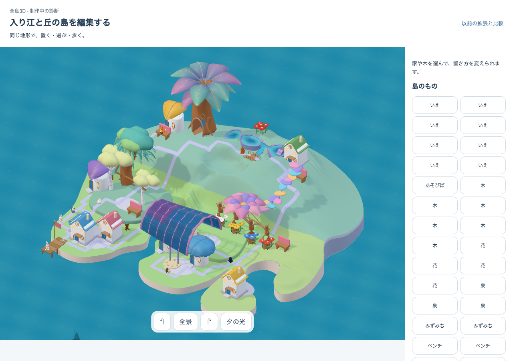

花庭を一輪と実株へ作り直す
P05は粗形。美術35/60 HOLD、全島M1と包括ゴールは未完、独立理解/安全N=0。
五冠の列を一輪へまとめ、原本の太株・根・枝・葉を同じ所有位置と実床へ接続した。株・主花・実ベンチの空間はまだ未完成。次の構図案を全景から作り、全12画面の美術評価と照合する。美術・理解と安全・runtimeを別々に判定する。
実target：http://127.0.0.1:5352/prototypes/place-qa/authored.html?water=wide&reference=preflight32
build：authored-flower-shape-c3 / native=true / candidate：native05-authored-flower-garden-v1
前回の実取得診断から保存した固定合成入力。32は所有物、家は8軒。今回の新取得・本人保存・32軒拡張の証拠ではない。coreの通常production/native=falseとは別target。
採用完成像と、同じ所有物の全景
 採用native05美術原本。診断32所有物とは異なる自由造形の完成像
採用native05美術原本。診断32所有物とは異なる自由造形の完成像 前回の実全景・同じ32所有物/8軒。31/60 HOLD
前回の実全景・同じ32所有物/8軒。31/60 HOLD
今回の実全景・同じ32所有物/8軒。P05粗形、全島M1未完成長・編集・回転と画面幅
原PNGを加工せず表示。各画像を開くと元サイズで確認できる。若い/成熟の入力、選択と編集の記録、実world・source・版は生reportと照合に残す。
制作の契約と現在地 · 最初の失敗 · 包括ゴール